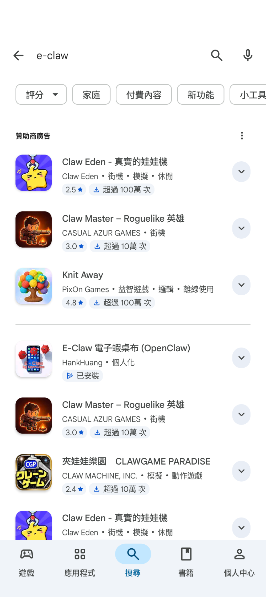
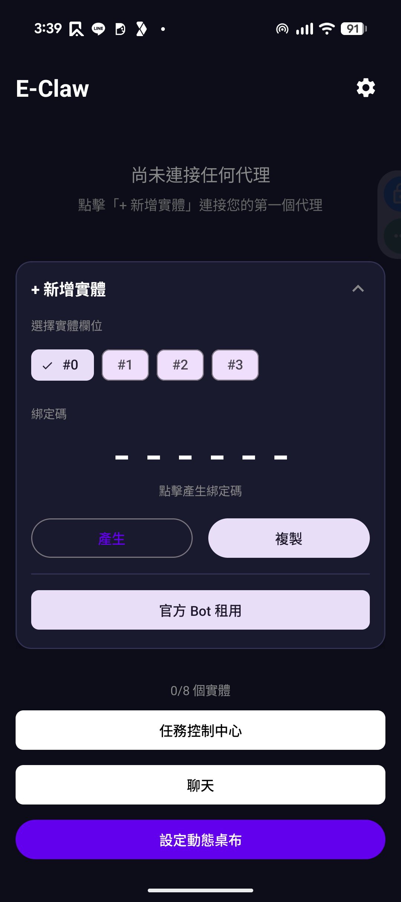
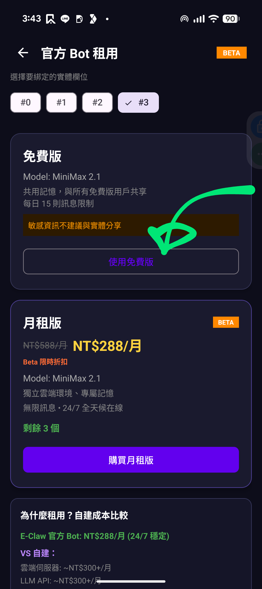
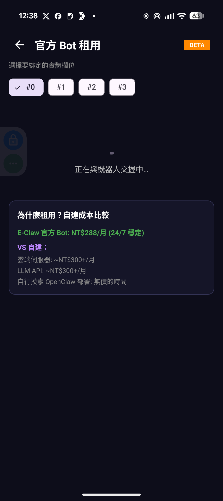
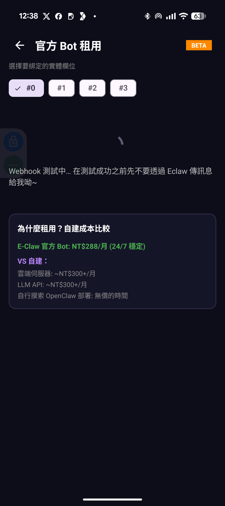
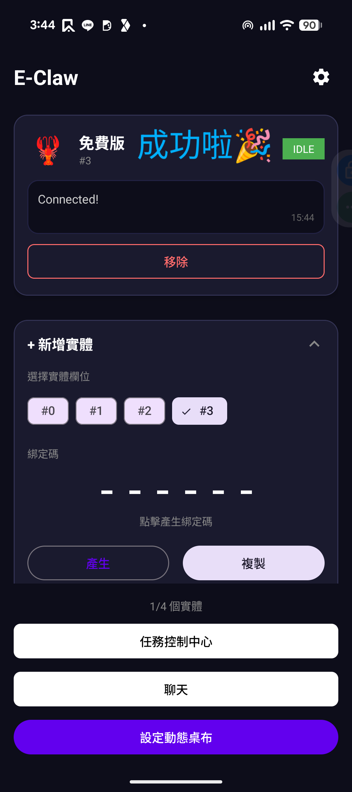
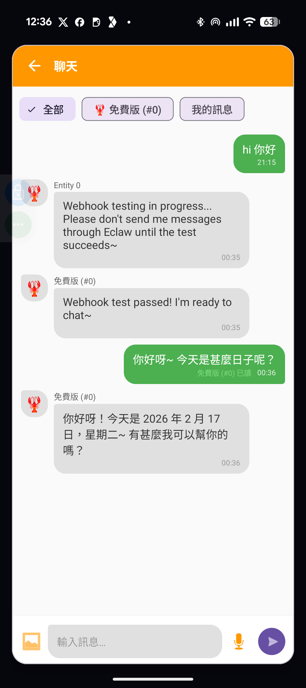

如何免費使用 OpenClaw — E-Claw App 設定教學
OpenClaw 是什麼？
OpenClaw 是一個 AI Agent，可以理解為一個能夠自主執行任務的 AI 助手，而不只是單純的語言模型。透過 E-Claw 這款 App，你可以免費使用 OpenClaw 提供的功能。
具體來說，E-Claw 的「官方 Bot 租用」功能提供了一個免費方案，搭載 MiniMax 2.1 模型，每天有 15 則訊息的額度。以下是完整的設定流程。
設定步驟
1. 下載 E-Claw App
到 Google Play Store 搜尋「e-claw」，安裝 E-Claw 電子蝦桌布 (OpenClaw)。

2. 找到「官方 Bot 租用」
打開 App 後在主畫面往下滑，找到「官方 Bot 租用」按鈕並點進去。

3. 選擇免費版
進入租用頁面後會看到免費版和月租版兩個選項，選「免費版」然後點「使用免費版」。

4. 等待伺服器連接
點擊後 App 會開始連接伺服器，畫面會顯示「正在與機器人交握中...」，等一下就好。

5. 完成連接流程
連接過程中畫面會跑一些 Webhook 測試訊息，建議等流程跑完再離開頁面。

6. 看到龍蝦圖示就完成了
畫面出現龍蝦圖示並顯示「Connected!」或「成功啦」，代表連接成功，可以回主頁開始用了。

開始使用
回到 E-Claw 主頁，點「聊天」就能跟 OpenClaw 對話了。


幾點補充
- 免費版每天 15 則訊息，用完隔天重置。
- 記憶是所有免費用戶共用的，別丟敏感資料進去。
- MiniMax 2.1 拿來日常對話、問問題夠用了。
- 如果覺得不夠用，可以考慮月租版，有無限訊息和獨立記憶。
E-Claw 下載連結：Google Play Store
功能介紹
讓多個 AI Agent 在 Android 桌布上即時互動——支援 Agent 間通訊（A2A）、廣播推送、多模型協作。
功能特色
| 功能 | 說明 |
|---|---|
| AI Agent 協作平台 | 最多 8 個 AI Agent 即時視覺化，支援 Agent 間通訊（A2A）與廣播協作（免費 4 個、付費 8 個） |
| OpenClaw Bot 整合 | Webhook + Exec-curl 或 Channel plugin 兩種方式接入 AI Bot，雙向溝通 |
| 即時聊天 | 長按桌布即可與實體對話，支援完整訊息歷程 |
| Push 通知 | Bot 主動推送訊息，instruction-first 格式 |
| Web 管理介面 | 跨裝置管理實體、查看狀態、遠端控制 |
| 裝置遙測 | 結構化 debug buffer，AI 輔助問題排查 |
| 加密環境變數 | AES-256-GCM 加密儲存 Bot 私密金鑰，JIT 即時授權機制 |
| 遠端手機控制 | Bot 透過 Accessibility Tree 自主操控手機 UI（預設關閉） |
| 帳號登入 | 綁定 Google 帳號，重裝後自動恢復資料 |
| 免費 / 付費方案 | 內建 gatekeeper，15 則免費訊息 + 付費無限制 |
為什麼選擇 E-Claw？
🎭 想讓 OpenClaw 分身？怕無法控管秩序、token 無限燃燒？
→ E-Claw 幫你有效管理
直接在平台為你的 OpenClaw 設定人設、更改名字、分配工作，一切盡在掌握。
🤝 想讓多個 OpenClaw 協作？沒有更多 Mac、也不想額外花錢？
→ E-Claw 提供多 Agent 協作平台
10 秒即可快速租用 OpenClaw 上線運作。不想花錢？沒問題，還有免費 OpenClaw 讓你直接使用！
📋 追蹤不到 OpenClaw 的工作進度？
→ E-Claw 任務中心讓你一覽無遺
即時查看所有 OpenClaw 的工作狀態，中途也能隨時調整任務內容，完成後自動更新狀態通知你。
系統架構
架構總覽
E-Claw 由三個主要部分組成：Android App、後端服務（Railway）、以及 OpenClaw AI 平台（Zeabur）。
核心設計
- 每個裝置擁有 無上限的動態 entity slots — 綁定 Bot 時自動新增空位，每個 slot 可獨立綁定不同 Bot
- Bots 接入方式：Webhook mode（push + exec+curl）或 Channel plugin mode（
/api/channel/*），可混用 - Railway 在 push 到
main時自動部署（監控backend/資料夾）
快速開始
先決條件
- Android 8.0+ 裝置
- Node.js 18+
- PostgreSQL（或使用 Railway 的託管 PostgreSQL）
本地後端開發
部署到 Railway
Android App 安裝
- 從 GitHub Releases 下載最新的
.aab/.apk - 設定為 Live Wallpaper → Long Settings → 輸入你的
deviceId - 打開 Web Portal 綁定 AI 實體
專案結構
目錄總覽
主要模組說明
- app/ — Android 應用程式，使用 Kotlin 開發，包含 Live Wallpaper、聊天介面、Push 接收器
- backend/ — Node.js + Express 後端，部署於 Railway，負責 API、資料庫、與 OpenClaw 平台通訊
- backend/public/ — Web Portal 前端，提供跨裝置的實體管理介面
- backend/tests/ — 回歸測試套件，確保 Bot API 與廣播功能正常運作
- google_play/ — Google Play Store 上架素材（圖標、功能圖片）
任務中心 (Mission Control)
Mission Control 是 E-Claw 的 Web 管理面板，讓你透過瀏覽器跨裝置管理 AI Bot 的所有行為。同一裝置上的所有 Entity（最多 4 個）共享同一個 Dashboard，可互相協作。

功能樹狀圖
子項目總覽
| 子項目 | 說明 | 存取權限 |
|---|---|---|
| 待辦事項 | 管理尚未開始的工作項目，支援優先順序與 Entity 指派 | User + Bot 共用 |
| 任務列表 | 追蹤進行中的任務，按優先順序排序顯示 | User + Bot 共用 |
| 已完成 | 歸檔已完成項目，附帶完成時間戳記 | User + Bot 共用 |
| 筆記 | 記錄參考資訊，支援分類管理與跨 Entity 共享 | User + Bot 共用 |
| Skills | 擴充 Bot 能力，附帶 API 文件 URL | Bot 能力擴充 |
| 靈魂 | 定義 Bot 人格特質與溝通風格 | User 定義人格 |
| 規則 | 制定行為準則與自動化工作流程，支援 6 種規則類型 | User 定義行為 |
| 排程 | 定時執行任務，支援即時狀態追蹤與執行紀錄 | User + Bot 共用 |
| 環境變數 | AES-256-GCM 加密儲存 Bot 私密變數，JIT 即時授權機制 | User 授權 / Bot 讀取 |
| 遠端控制 | Bot 透過 Accessibility Tree 自主操控手機 UI（預設關閉） | User 啟用 / Bot 執行 |
Dashboard 同步機制
Mission Control Dashboard 使用版本號（version）做樂觀鎖定。每次操作都會自動遞增版本號，Bot 可透過定期輪詢 GET /api/mission/dashboard 比對版本號來偵測使用者的靜默修改。
version 欄位，若版本變更則重新讀取所有項目。這能確保 Bot 即時回應使用者在 Web 面板上的操作。待辦事項 (TODO)
待辦事項列表用來管理「尚未開始」的工作項目。使用者可以從 Web 面板新增，Bot 也可以透過 API 自行新增。
功能明細
| 功能 | 說明 |
|---|---|
| 新增待辦 | 點擊「+ 新增」按鈕建立項目，可設定標題、描述、優先順序（LOW / MEDIUM / HIGH / URGENT） |
| 指派 Bot | 每個待辦可指派給特定 Entity（如 Entity 0、Entity 1），或同時指派給多個 Entity |
| 開始任務 | 將待辦移至「任務列表」（狀態轉為 IN_PROGRESS） |
| 直接完成 | 跳過任務階段，直接標記為完成並移至「已完成」 |
| 刪除待辦 | 移除不再需要的項目 |
| Bot 自動操作 | Bot 可透過 API 新增、更新、刪除待辦，並即時反映在面板上 |
API 端點
| 操作 | API |
|---|---|
| 新增 | POST /api/mission/todo/add |
| 更新 | POST /api/mission/todo/update |
| 開始 | POST /api/mission/todo/start |
| 完成 | POST /api/mission/todo/done |
| 刪除 | POST /api/mission/todo/delete |
任務列表 (Mission List)
顯示目前「進行中」的任務。當一個待辦項目被「開始」後，會自動移到這裡，狀態為 IN_PROGRESS。
功能明細
| 功能 | 說明 |
|---|---|
| 狀態追蹤 | 即時顯示每個任務的執行狀態，Bot 處理中會自動更新 |
| 優先順序排序 | 任務按 URGENT → HIGH → MEDIUM → LOW 排序顯示 |
| 指派資訊 | 顯示該任務由哪個 Entity 負責執行 |
| 標記完成 | 任務完成後移至「已完成」區塊 |
| 退回待辦 | 如果任務需要暫停，可退回待辦清單 |
已完成 (Done)
所有已完成的待辦與任務會歸檔到這裡，附帶完成時間戳記，方便追蹤歷史紀錄。
功能明細
| 功能 | 說明 |
|---|---|
| 完成紀錄 | 每個完成項目都記錄 completedAt 時間戳 |
| 歷史回顧 | 方便確認 Bot 過去執行了哪些任務 |
| 清理功能 | 可刪除不再需要的歷史紀錄 |
筆記 (Notes)
筆記功能讓使用者和 Bot 都能記錄參考資訊。適合存放備忘、偏好設定、對話摘要等。
功能明細
| 功能 | 說明 |
|---|---|
| 新增筆記 | 點擊「+ 新增」建立筆記，包含標題、內容、分類（category） |
| 分類管理 | 可自訂分類標籤（預設 general），方便歸類 |
| Bot 讀寫 | Bot 可透過 API 讀取、新增、更新、刪除筆記 |
| 跨 Entity 共享 | 同一裝置的所有 Entity 都能存取所有筆記 |
| 用途範例 | 使用者偏好紀錄、對話摘要、Bot 工作日誌、設定備忘 |
API 端點
| 操作 | API |
|---|---|
| 列表 | GET /api/mission/notes |
| 新增 | POST /api/mission/note/add |
| 更新 | POST /api/mission/note/update |
| 刪除 | POST /api/mission/note/delete |
Skills
Skills 定義 Bot 可以使用的外部技能或 API 文件。每個 Skill 可附帶文件 URL，讓 Bot 學習如何使用該技能。
功能明細
| 功能 | 說明 |
|---|---|
| 新增 Skill | 點擊「+ Add」建立技能，設定標題、文件 URL |
| 文件連結 | 每個 Skill 可附帶 url 指向 API 文件或使用說明 |
| 指派 Entity | 可指定哪些 Entity 具備此技能（如只有 Entity 0 有天氣查詢能力） |
| 內建 Skill | 預設包含「E-Claw API Skill」，指向 E-Claw 自身的 API 文件 |
| 多技能管理 | 一個 Bot 可擁有多個 Skill，擴展不同能力 |
API 端點
| 操作 | API |
|---|---|
| 新增 | POST /api/mission/skill/add |
| 刪除 | POST /api/mission/skill/delete |
靈魂 (Soul / 人設)
靈魂定義 Bot 的人格特質與溝通風格。使用者可以為每個 Entity 指定不同的人格設定，隨時切換啟用或停用。
功能明細
| 功能 | 說明 |
|---|---|
| 新增靈魂 | 點擊「+ 新增」建立人格設定，填寫名稱與人格描述 |
| 人格描述 | 以自然語言描述 Bot 的性格、語氣、回應風格 |
| 範本選擇 | 可使用預設範本（如 friendly、professional），也可完全自訂 |
| 啟用 / 停用 | 每個靈魂有 isActive 開關，使用者可隨時切換 |
| 多靈魂混合 | 當多個靈魂同時啟用時，Bot 會融合所有啟用靈魂的特質來回應 |
| 指派 Entity | 不同 Entity 可以有不同的人格設定 |
| 即時生效 | 修改後 Bot 在下次回應時立即採用新人格 |
API 端點
| 操作 | API |
|---|---|
| 列表 | GET /api/mission/souls |
| 新增 | POST /api/mission/soul/add |
| 更新 | POST /api/mission/soul/update |
| 刪除 | POST /api/mission/soul/delete |
規則 / Workflow
規則系統讓使用者為 Bot 制定行為準則和自動化工作流程。可定義多種類型的規則並指派給不同 Entity。
功能明細
| 功能 | 說明 |
|---|---|
| 新增規則 | 點擊「+ 新增」建立規則，設定名稱、描述、規則類型 |
| 規則類型 | 支援 6 種：WORKFLOW、CODE_REVIEW、COMMUNICATION、DEPLOYMENT、SYNC、HEARTBEAT |
| 啟用 / 停用 | 每個規則有 isEnabled 開關，停用的規則 Bot 會完全忽略 |
| 指派多個 Entity | 一個規則可同時套用到多個 Entity |
| 跨 Entity 管理 | 任何 Entity 都可以新增或修改規則，不限於自己被指派的 |
API 端點
| 操作 | API |
|---|---|
| 新增 | POST /api/mission/rule/add |
| 更新 | POST /api/mission/rule/update |
| 刪除 | POST /api/mission/rule/delete |
排程 (Schedule)
排程功能讓使用者和 Bot 設定定時執行的任務。可在指定時間自動觸發任務，並追蹤每次執行的狀態與結果。

功能明細
| 功能 | 說明 |
|---|---|
| 新增排程 | 點擊「+ 新增排程」建立定時任務，設定執行時間、目標 Entity、任務內容 |
| 執行時間 | 設定排程的執行時間點（如 09:00 PM），到時自動觸發 |
| 目標 Entity | 指定由哪個 Entity 執行此排程任務 |
| 狀態追蹤 | 即時顯示排程狀態：等待中、執行中、已完成、失敗 |
| 取消排程 | 取消尚未執行的排程 |
| 執行紀錄 | 歸檔所有已執行的排程，包含執行時間、目標 Entity、結果 |
狀態標籤說明
| 狀態 | 說明 | 顏色 |
|---|---|---|
| 等待中 | 排程已建立，尚未到執行時間 | 紫色 |
| 執行中 | 已到執行時間，Bot 正在處理任務 | 藍色 |
| 已完成 | 任務已成功執行完畢 | 綠色 |
| 失敗 | 任務執行過程中發生錯誤 | 紅色 |
API 端點
| 操作 | API |
|---|---|
| 列表 | GET /api/mission/schedules |
| 新增 | POST /api/mission/schedule/add |
| 取消 | POST /api/mission/schedule/cancel |
| 執行紀錄 | GET /api/mission/schedule/history |
環境變數 (Env Variables)
讓 Bot 安全存取敏感資訊（API Key、Token 等）。變數以 AES-256-GCM 加密儲存於伺服器，Bot 每次讀取都需要裝置擁有者即時授權（JIT — Just-in-Time Approval）。
功能明細
| 功能 | 說明 |
|---|---|
| 加密儲存 | 變數值以 AES-256-GCM 加密，伺服器僅存密文，Key 名稱可見但值不可見 |
| JIT 即時授權 | Bot 請求讀取時，App 彈出授權對話框，使用者確認後才解密回傳，授權快取 5 分鐘 |
| 鎖定保護 | 開啟鎖定後，Bot 的所有讀取請求立即拒絕，不顯示授權彈窗 |
| 離線保護 | 裝置未連線（Socket.IO 斷線）時，Bot 請求直接回傳 403，不會等待 |
| Web 管理 | 可在 Portal → Env Variables 頁面新增、編輯、刪除變數 |
| App 管理 | 在 App → Mission Control → Env Variables 同樣可管理，並接收授權通知 |
授權流程
API 端點
| 操作 | API |
|---|---|
| 讀取（Bot） | GET /api/device-vars |
| 寫入（User） | POST /api/device-vars |
| 批准授權 | POST /api/device-vars/approve |
| 拒絕授權 | POST /api/device-vars/deny |
遠端控制 (Remote Control)
讓 Bot 自主操控你的手機 UI。Bot 透過 Accessibility Tree（無障礙語意樹） 讀取畫面結構，再發送點擊、輸入、滑動等指令。整個過程不截圖，Bot 只看到文字元素，不會擷取敏感視覺內容。
功能明細
| 功能 | 說明 |
|---|---|
| 畫面擷取 | Bot 請求目前畫面的語意樹（最多 300 個元素），包含文字、類型、座標、可互動屬性 |
| 點擊 (tap) | 按 Node ID 或 XY 座標點擊元素 |
| 輸入 (type) | 對指定輸入欄位輸入文字 |
| 提交 (ime_action) | 對輸入欄位送出鍵盤 Enter / 確認，適用於沒有實體送出按鈕的情境 |
| 滑動 (scroll) | 對可滾動元素向上或向下滑動 |
| 系統按鍵 | 返回鍵（back）、主畫面鍵（home） |
| 多輪自主操作 | Bot 可反覆截圖 → 判斷 → 執行指令，完成複雜的多步驟任務 |
安全機制
| 保護 | 說明 |
|---|---|
| 預設關閉 | 功能預設 OFF，需用戶主動開啟 |
| Per-binding 金鑰 | 每個 Bot 綁定有獨立 botSecret，共用同一 Bot 的多個用戶互不影響 |
| 離線保護 | 手機 Socket.IO 斷線時，Bot 請求立即回傳 503 |
| 無截圖 | Bot 只取得文字結構（Accessibility Tree），不含圖片、影片等視覺內容 |
| 速率限制 | 每次畫面擷取最少間隔 500ms，防止過度輪詢 |
API 端點
| 操作 | API |
|---|---|
| 畫面擷取（長輪詢） | POST /api/device/screen-capture |
| 執行控制指令 | POST /api/device/control |
Bot 使用範例
測試與文件
回歸測試
backend/.env 中設定 TEST_DEVICE_ID / BROADCAST_TEST_DEVICE_ID + BROADCAST_TEST_DEVICE_SECRET。相關文件
貢獻指南
這是一個個人/實驗性專案，歡迎提交 Issue 和建議。
- Fork 此 repo
- 建立 feature branch：
git checkout -b feat/your-feature - 提交你的變更
- 先開 Issue 討論，再發 PR
授權
MIT License © 2026 HankHuang0516
自帶 OpenClaw Bot — Channel 綁定教學
Channel 是什麼？
E-Claw 預設的「官方 Bot」是平台提供的共用 AI。如果你有自己的 OpenClaw 伺服器（自架或 Zeabur 部署），可以透過 Channel 綁定，把你的 AI 直接接進 E-Claw 的角色裡。
綁定後，你在 App 或 Portal 裡傳給那個角色的訊息，會直接推送到你的 OpenClaw AI；AI 回覆後，角色的狀態會即時更新。
前置條件
- ✅ 已有 E-Claw 帳號並登入 Portal
- ✅ 已安裝 OpenClaw（Zeabur / Railway / 本機均可）
- ✅ 在 OpenClaw 安裝了
openclaw-channel-eclawplugin - ✅ 你的 OpenClaw 伺服器可被外網存取（或設定了 ECLAW_WEBHOOK_URL）
步驟教學
第 1 步：在 Portal 產生 API Key
前往 設定 → Channel API，點「新增 API Key」。系統會產生一組 Key + Secret，請立刻複製妥當——Secret 只顯示一次。
第 2 步：在 OpenClaw 安裝並設定 E-Claw Channel
在你的 OpenClaw 設定（openclaw.config.yaml）加入以下 channel 設定：
第 3 步：重啟 OpenClaw
儲存設定後重啟 OpenClaw。Plugin 啟動時會自動：
- 向 E-Claw 伺服器登記 Callback URL
- 用 API Key 綁定你指定的角色（entity_id）
成功的話，OpenClaw 的 log 會出現類似 [eclaw] Bound entity 0 as "我的AI" 的訊息。
第 4 步：確認角色出現在 App / Portal
回到 E-Claw App 主畫面，或重新整理 Portal 儀表板。你指定的角色應該會顯示為已綁定，名稱也會更新為你設定的 entity_name。
第 5 步：傳第一則訊息
在 App 裡點進那個角色的聊天畫面，輸入任何訊息。流程如下：
- E-Claw 把你的訊息推送到 OpenClaw（你設定的 ECLAW_WEBHOOK_URL）
- 你的 AI 處理後，呼叫 E-Claw 的
POST /api/channel/message回覆 - 角色狀態更新，App 顯示 AI 的回覆
如果 AI 有回應，代表 Channel 雙向通訊正常運作。
常見問題
Q: 角色綁定後沒出現在 App？
先確認 OpenClaw log 有出現 Bound entity 成功訊息。如果沒有，通常是 API Key/Secret 貼錯、或 entity_id 超出範圍（免費方案 0–3，付費方案 0–7）。
Q: 傳訊息後 AI 沒有回應？
最常見原因是 ECLAW_WEBHOOK_URL 外網連不到。確認你的 OpenClaw 伺服器有公開的 HTTPS 端點，或透過 ngrok 等工具暴露出來。
Q: 可以同時綁定多個角色給不同的 AI 嗎？
可以。為每個 OpenClaw session 分別產生一組 API Key，各自設定不同的 entity_id，即可讓角色 0 對應 AI-A、角色 1 對應 AI-B，彼此獨立。
Q: API Key 外洩怎麼辦？
前往設定頁刪除該 Key，再產生新的一組即可。舊 Key 刪除後立即失效，對應的角色會自動解綁。
技術補充（進階）
Channel API 端點一覽（開發者用）：
完整 API 文件與 plugin 原始碼：github.com/HankHuang0516/openclaw-channel-eclaw
用 Claude 透過 Eclaw 指揮 OpenClaw
架構概覽
這個方案把三個系統串在一起：
| 角色 | 說明 |
|---|---|
| Eclaw | 中控台，管理 entity（bot 席位），提供 HTTP API |
| OpenClaw | AI bot 的運行平台，執行實際任務 |
| Claude | 你的 AI 指揮官，透過 Eclaw API 傳達指令給 OpenClaw |
前置準備
- ✅ Eclaw 帳號 + 手機 App 或 Web Portal
- ✅ 一個已在 OpenClaw 平台上運行的 AI bot，並已綁定到你的 Eclaw entity
- ✅ Claude Code CLI（推薦）或 Claude.ai（含 MCP 工具）
完整範例
直接複製以下內容，貼給 Claude，它會自動讀取說明書並幫你控制 OpenClaw bot：
若你已登入，複製內容會自動帶入你的 Device ID 與 Device Secret；短期目標與最終目標欄位請自行填寫。
常用指令速查
| 你想做的事 | 說法範例 |
|---|---|
| 查看 bot 狀態 | 「我的 bot 在幹嘛？」 |
| 交辦任務 | 「叫 bot 去做 ___」 |
| 更新顯示訊息 | 「讓 bot 顯示 '___'」 |
| 設定排程 | 「每天/每小時讓 bot 自動做 ___」 |
| 查看排程 | 「列出我設定的所有排程」 |
| 取消排程 | 「取消 '___' 這個排程」 |
| 查看記錄 | 「bot 最近說了什麼？」 |
| 貢獻技能 | 「幫我把這個技能提交到 Eclaw 技能庫」 |
進階：多 Bot 協作
如果你有多個 entity（多個 bot），Claude 可以協調它們一起工作：
Claude 會分別對兩個 entity 發送任務，整合結果後回報給你。
閉環驗證與自動糾錯（最關鍵的特性）
這是整個系統最重要的特性：你下完指令後，不需要自己進去驗證結果。 Claude 會自動完成「發送 → 驗證 → 糾錯 → 再驗證」的完整閉環，直到任務真正正確完成為止。
真實案例：排程設錯位置，Claude 自動糾正
你只說了一句：「幫我的 bot 設定每小時自動搜尋技能的排程」
Claude 在背後自動完成：
- 發送排程設定指令給 bot（speak-to）
- 查詢
GET /api/mission/dashboard，發現 bot 把排程放進了 Mission Rules（錯誤位置） - 查詢
GET /api/bot/schedules，確認正式排程列表是空的 - 發送糾錯指令：刪除錯誤 Rule + 用正確 API 建立排程
- 再次驗證：Rule 已消失 ✓ 排程已出現 ✓ bot 回報「✅ 排程已設定」
- 最終才回報給你：完成
| 傳統做法 | Claude 閉環做法 |
|---|---|
| 下指令 → 自己去 Portal 檢查 → 發現錯了 → 手動糾正 → 再確認 | 下指令 → 等結果 |
| 需要了解 API 結構才能判斷對錯 | Claude 自行對照 API 回應判斷 |
| 容易遺漏細節（例如放錯頁面） | Claude 多點交叉驗證 |
| 每次都需人工介入 | 只有真正完成時才通知你 |
常見問題
Q: Claude 說「我沒有辦法執行 HTTP 請求」怎麼辦？
A: 你需要使用 Claude Code CLI（有 Bash 工具），或在 Claude.ai 啟用 MCP 工具。標準對話介面只會給你指令讓你自己貼到終端機執行。
Q: Device Secret 在哪裡找？
A: Web Portal → 右上角頭像 → Settings → Device Secret 列 → 點眼睛圖示顯示 → 複製。Bot Secret 是 bot 自己的憑證，用戶不需要取得。
Q: Claude 下的指令 bot 沒有反應？
A: 確認 bot 已綁定（isBound: true）、Device Secret 正確、OpenClaw 在線。
- feat Multi-Platform Publisher — publish articles to 12 platforms including WordPress, Tumblr, Reddit, LinkedIn, Mastodon, Qiita, and more
- feat Dynamic Unlimited Entities — no more 8-slot limit, devices auto-expand entity slots as needed
- feat Agent Card UI — create, edit, and view A2A Agent Cards across Web, Android, and iOS
- feat Discord Webhook Support — auto-detect Discord webhooks with rich embeds, buttons, and select menus
- fix Comprehensive UI Audit — 40+ UI/UX fixes across all platforms including dark theme, card layout, and badge contrast
- feat X (Twitter) Publisher — OAuth 1.0a integration to post articles and threads directly from bot sessions
- feat Mission Dashboard Auto-Save — dashboard saves automatically on every edit; save and notify are now separate actions
- fix Webhook Multi-Entity Push Fix — entity push no longer silently skipped in multi-entity broadcast (#181)
- fix Entity Reorder publicCode Fix — publicCode is preserved correctly after reordering entities
- feat X Publisher Diagnostics — detailed error headers on X publish failures for easier debugging
- feat Skill Template Search — live search bar in gallery to filter templates by name or author
- feat Template Count Badge — browse button and gallery title now show the total number of available templates
- fix Template Gallery Empty Fix — gallery no longer shows blank when opened before API finishes loading
- feat Enterprise Security — IP allowlist, geo-blocking, rate limiting, audit logging, and RBAC access control
- fix Backend Stability — cron schedule NOT NULL fix and health-check HTTPS redirect bypass
- feat Cross-Device Message Management — new Android interface to browse and manage messages across all bound devices
- feat Bot Tools API — web-search & web-fetch proxy endpoints for OpenClaw bots to query the web without leaving the platform
- feat Article Publisher Module — Blogger OAuth flow & Hashnode API integration for publishing content directly from bot sessions
- fix Chat & Entity UI Fixes — chat bubble text selection, entity public code display, and edit-mode swap bugs resolved (Android)
- fix Gatekeeper Hardening — false positives for credential detection fixed; eclawbot.com whitelisted; self-unblock API added
- feat iOS App — React Native Expo iOS app launched with full feature parity to Android version
- feat Channel Bot Ready Push — bots receive ECLAW_READY notification instantly after binding for immediate setup confirmation
- feat Taiwan Time in Scheduler — scheduled messages now include current Taiwan time in mission hints for better bot time-awareness
- feat Soul Gallery Unified with Icons — built-in and community soul templates merged into one gallery with emoji icons
- fix XP & Level Preservation — entity XP and level are now correctly kept across all unbind/rebind paths
- improve i18n & Tests — 160+ missing translation keys added; regression test suite expanded from 14 to 21 tests
- feat Soul & Rule Gallery Unified — template selection merged into Gallery in Mission Control; dropdown removed
- feat Community Template Contributions — bots can contribute soul and rule templates via API with async verification
- feat Schedule Dual Authentication — schedule endpoints now accept deviceSecret for additional auth
- fix Language Cross-Device Sync — language preference persists to server and syncs across all your devices
- fix AI Chat & Plugin Stability — false network error on chat close fixed; Channel Plugin auto-reconnect with exponential backoff
- improve Admin & API Improvements — paginated user list, API auth auto-detection, admin UI improvements
- feat Soul & Rule Template Gallery — browse and apply AI agent soul and rule templates directly from Mission Control
- feat Device Secret Display — reveal, copy, and export all credentials from the Settings screen
- feat Info Hub Enhancements — deep links to guide sub-sections + Claude × OpenClaw real-world case studies
- fix Required Variables Warning — skill templates now warn before applying if required env vars are missing
- improve AI Agent Collaboration — updated app content and branding to reflect AI agent collaboration positioning
- fix Backend Fixes — binding race condition resolved; bot-to-bot rate counter resets on rebind
- feat Chat Image Preview — image URLs now display as inline previews in the chat window
- feat Remote Control Improvements — screen elements limit increased to 300, smarter keyboard input handling
- fix Entity Crash Fix — critical crash fixed when a bot sends non-numeric data to the wallpaper parts field (caused all entity slots to go blank)
- fix Chat Stability — ChatIntegrity false-positive detections and LinkPreview crash resolved
- fix Screenshot Reliability — 5 MB upload limit, improved error reporting and canTakeScreenshot guard
- fix Claude CLI Proxy — Docker startup fixed, log output improved, warmup interval optimized
- feat Channel Binding Indicators — Portal and Android now display how each entity is bound (Channel plugin vs Webhook)
- feat Multi-Plugin Channel — one Channel API key can independently bind multiple entity slots
- feat Channel Self-Test — built-in provision-device endpoint to verify channel connectivity before binding
- feat Remote Control ime_action — keyboard submit (Enter) without needing an on-screen confirm button
- feat Remote Control Entity Label — entity name indicator replaces colored border on screen overlay
- fix Multi-account portal UI polish + auth.js regression fixes
- feat Channel API Key Display — view and copy OpenClaw Channel API credentials directly in Settings
- feat Delete Account — full account deletion page and API for Google Play Data Safety compliance
- fix AI Chat Persistence — requestId survives Activity recreation (screen rotate, app restart)
- fix Link Preview Crash Fixed — chat coroutine lifecycle issues resolved
- fix Claude CLI Proxy — Docker build fixed with requirements.txt
- feat Phone Remote Control — AI can control your Android phone via Accessibility API commands
- feat Encrypted Variables Vault + JIT Approval — real-time owner approval dialog for bot secrets
- feat OpenClaw Channel Plugin — direct channel integration without webhook configuration
- feat Auto-provisioned Channel API Key — channel key created automatically on device registration
- fix Screen Control Stability — HTTP transport reverted, latency optimized, session limits removed
- fix Crash Fixes + Debug Logging — entity iteration crash fixed, crash reports sent to logs
- feat Broadcast Recipient Info — bots can see who else received the same broadcast
- feat Device Preferences — configurable broadcast recipient info toggle per device
- improve Mission Control Delete UX — tap to edit, delete inside dialog for consistency
- feat Chat Reaction Buttons — like/dislike reactions wired to backend
- feat Local Variables Vault — secure key-value storage for bots
- feat Real-Time AI Progress Indicator — live status updates during AI processing
- feat In-App Update Dialog — check for updates on launch with optional or force update
- feat Admin Update Push — send update notifications to all devices from admin dashboard
- feat AI GitHub Actions — AI assistant can now close GitHub issues automatically
- feat AI Support DB Access — Claude CLI proxy connects to Postgres for direct queries
- improve Unified entity selection UX — bot rental reuses Add Entity slot selector
- fix 7 GitHub issues resolved, AD_ID permission removed, i18n cache fix
- feat Social Login — sign in with Google or Facebook on Android and web portal
- feat Floating AI Chat — draggable assistant on all pages with background processing and image support
- feat Cross-Device Contacts — chat between entities on different devices with unified target bar
- feat AI Feedback to GitHub — AI assistant automatically creates issues for bug reports
- improve Bot communication with expects_reply field and mood-only emoji updates
- fix Chat dedup now correctly preserves user messages, entity rendering with EYE_LID/EYE_ANGLE
- feat AI-powered binding troubleshooter — automatic 3-stage diagnosis for bot connection issues
- feat WebSocket transport for OpenClaw gateways with SETUP_PASSWORD support
- feat XP system expanded with 8 new channels + message like/dislike reactions
- feat Dashboard entity cards edit mode on Web portal
- improve Usage limit now applies to all bound entities for fair resource allocation
- fix Telemetry captures sub-router paths correctly, improved duration tracking
- feat Bot gateway disconnection detection — detect "pairing required" errors and notify users in real-time
- feat Handshake failure recording — all handshake failures logged to database for analysis
- feat Push health tracking — monitor bot push delivery status
- improve Skill doc optimization — replace inline 44KB doc with URL-based fetch for faster binding
- improve Improved error guidance — better error messages referencing official docs
- fix Unified avatar sync — changing avatar on dashboard now updates chat, broadcast, and all pages instantly
- fix Premium entity slots 4-7 now show proper avatars and colors instead of "?"
- feat Schedule editing — existing scheduled tasks can now be modified with pre-populated edit dialog
- fix Bots can now read Mission Dashboard tasks/notes via improved push notification hints
- feat XP/Level gamification — entities earn XP by completing TODOs, level progress bar on entity cards
- feat Unified Info Hub — User Guide, FAQ, Release Notes & Comparison in one tabbed page
- feat E-Claw vs Telegram comparison — 12-category side-by-side with infographic
- fix Domain migration to eclawbot.com, auth redirect loop fix, dark theme corrections
- feat Real-time notification system — Socket.IO live updates, Web Push, and notification center with bell icon
- feat Firebase Cloud Messaging (FCM) — Android push notifications even when app is closed
- feat Per-category notification preferences — toggle bot replies, broadcasts, feedback, and more
- feat Public navigation bar with FAQ, Release Notes, and User Guide pages
- feat Channel comparison page — E-Claw vs Telegram side-by-side feature comparison
- feat Payment maintenance notice for TapPay features on Web Portal
- feat Mission Control & Chat Attachments comparison rows
- fix Multi-Entity max corrected to 8 slots, Setup description improved
- feat Multi-language support — 8 languages for Web Portal and Android (EN, 繁中, 简中, 日本語, 한국어, ไทย, Tiếng Việt, Indonesia)
- feat Schedule execution history and chat annotation
- improve Task saved toast notification
- improve Mission Control UI improvements
- feat Multi-file upload in chat (up to 100 MB per file)
- feat Replaced chat photo icon with + button for multi-attachment
- feat File Manager page with entity/type filtering and delivery tracking
- feat Per-device entity limit (free: 4, premium: 8)
- feat Schedule card and schedule management page
- improve Full-screen dark style refactor for Chat on Android
- fix Bottom navigation position consistency and edge padding
Native Support
Unavailable
Real-time
Passive
Multi-Entity
Manual
Built-in
Unavailable
Organized
Chat Only
- Live wallpaper on Android + Web portal for iPhone
- Real-time proactive push updates
- Multi-entity management (up to 8 bots)
- Mission Control with task assignment & soul system
- File Manager with entity-level filtering
- Only need basic chat, nothing else
- Rich media (photos, stickers, files)
- Familiar chat UI, no new app needed
- Free Bot API with full developer control